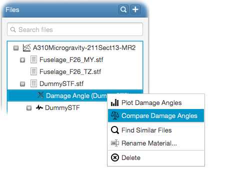

This will open the compare damage angles input panel. Following inputs are required;
- Basis damage angle
Select the damage angle that will be used as the basis for the life factor comparison,- Equivalent stress type
Select the type of equivalent stress to use for the comparison,- Plotting order
Select how the life factors should be ordered within the plot.

where p is the fatigue material slope and m is the propagation material constant.